¿Qué es una computadora?
Ejemplos de que ES una computadora
Las siguientes imagenes muestran objetos electrónicos que SON computadoras:
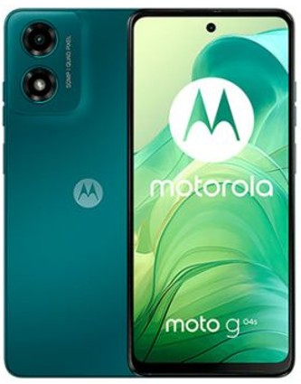
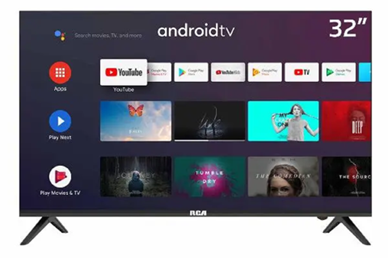
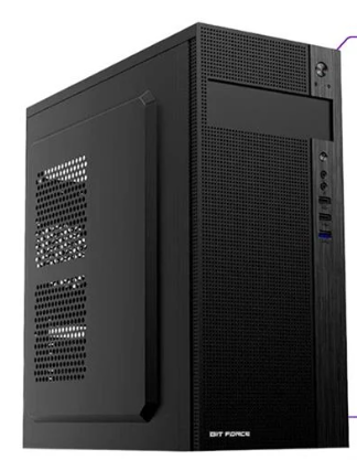
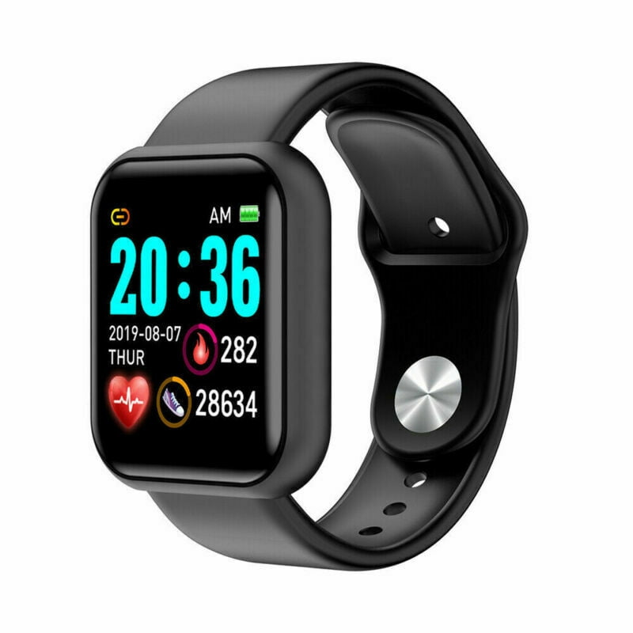
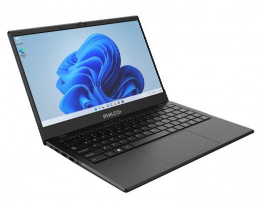
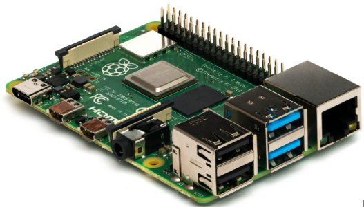
Ejemplos de que NO ES una computadora
Las siguientes imagenes muestran objetos electrónicos que NO SON computadoras:
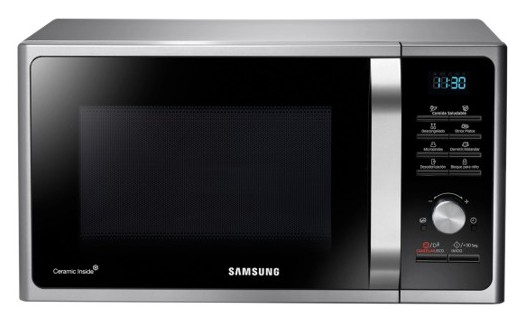
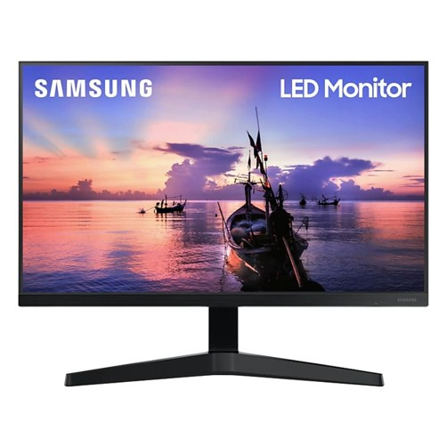
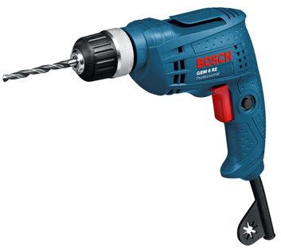
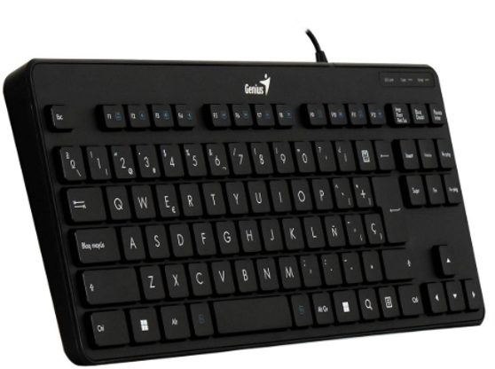
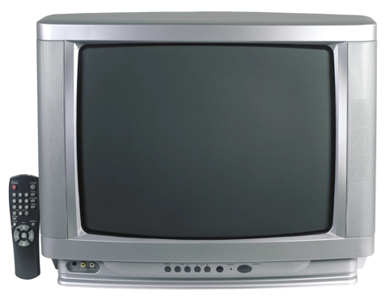
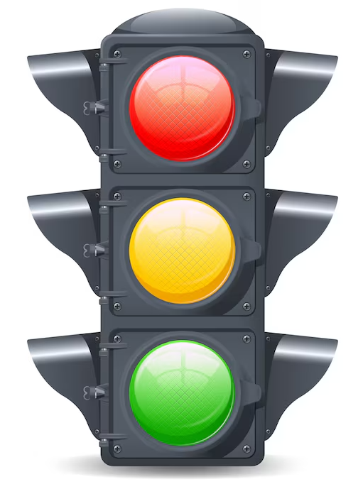
Definición
Una computadora es un dispositivo electrónico capaz de:
- Recibir datos.
- Procesar datos.
- Almacenar datos.
- Enviar datos
Tarea
- Escribir una lista de 3 objetos electrónicos que SEAN computadoras.
- Escribir una lista de 3 objetos electrónicos que NO SEAN computadoras.
- Dibujar una red conceptual con estos 6 objetos.
- Armar una tabla con los 6 objetos.